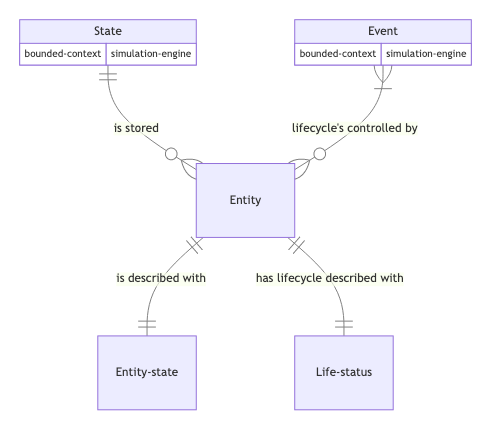
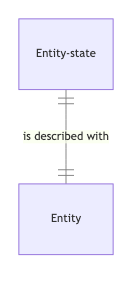
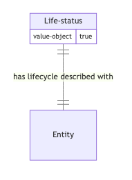

automaton-simulation-de.entity
An entity is a part of the model living in the state with its lifecycle managed.
- 
- 
- 
create
(create state date entity-name entity-data)Creates an entity called :entity-name with entity-data. The lifecycle of this entity starts at date.
An error is documented if the entity is created already.
dispose
(dispose state date entity-name)Disposing an entity by its entity-name is removing its data, its lifecycle will mark ::disposed at the current date.
error?
(error? {:automaton-simulation-de.entity/keys [entities], :as _state})Detects an eror in the entities.
errors
(errors state)(errors state entity-name)Returns entity errors if exists with a map associating a collection of errors to an entity-name
is-created?
(is-created? state entity-name)Is the entity called :entity-name living?
is-disposed?
(is-disposed? state entity-name)Is the entity called :entity-name disposed?
is-living?
(is-living? state entity-name)Is the entity called :entity-name living?
lifecycle-corrupted
(lifecycle-corrupted {:automaton-simulation-de.simulation-engine/keys [state], :as _snapshot} _params)Detects if one entity has a lifecycle error.
lifecycle-status
(lifecycle-status state entity-name)The lifecycle has three possible fields ::created, ::living or :disposed depending on the position of the entity in its lifecycle.
state
(state state entity-name)Returns the state value of the entity called entity-name.
stopping-definition
(stopping-definition)update
(update state date entity-name f & args)Update the entity called :entity-name with f applied to the existing value together with arguments args. The update of the entity is mark in the living lifecycle field.
wrap-model
(wrap-model model)Wraps a model to add necessary behavior to model an entity.